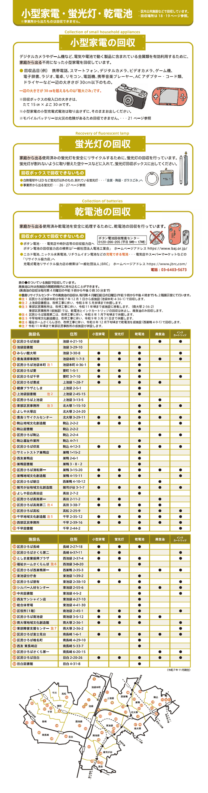
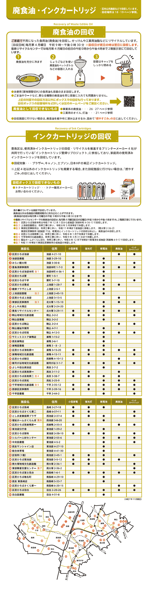

オーディオ 機器（ラジオ）の捨て方
区施設等拠点回収
注意事項
※一辺がおおむね３０cmを超えるものは粗大ごみへ。
回収している施設は、下の区の資料で確認できます。
小型家電・蛍光灯・乾電池（区施設等拠点回収）(区の資料)

廃食油・インクカートリッジ（区施設等拠点回収）(区の資料)

ほかの「区施設等拠点回収」の品目
オーディオ 機器（ＬＤプレイヤー）オーディオ 機器（カセットデッキ）オーディオ 機器（携帯音楽プレーヤー・デジタルオーディオプレーヤー）オーディオ 機器（ＣＤプレイヤー）オーディオ 機器（チューナー）オーディオ 機器（ラジカセ）オーディオ 機器（レコードプレイヤー）加湿器家庭用ゲーム機カメラ乾電池キーボード(パソコン用)
分別辞典の品目一覧へ